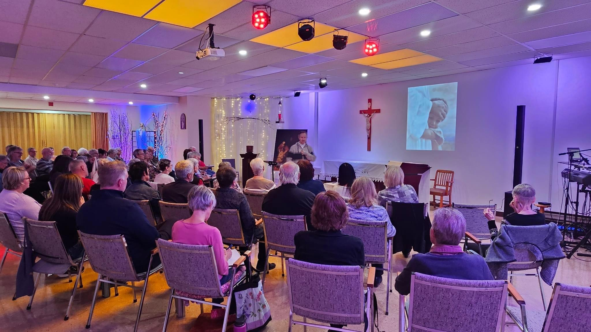
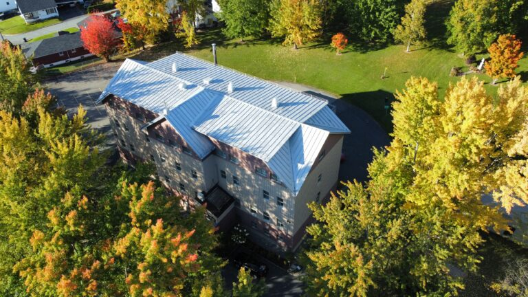
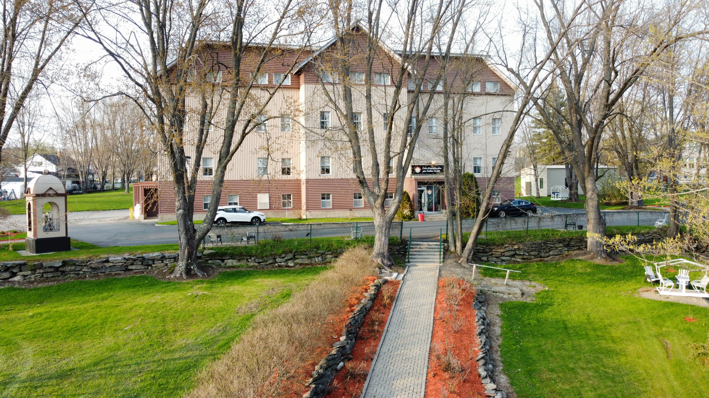

Faites défiler horizontalement sur ordinateur pour voir les 4 sections côte à côte, comme le dépliant imprimé.
Recto — Extérieur


Nos sessions
Pour goûter la joie d'être aimé : chaque personne est unique et aimée. L'agapèthérapie permet à Jésus de guérir ce qui nous empêche d'avancer.
Session pour les personnes ayant vécu des abus sexuels dans l'enfance — libération de la honte et retrouver sa dignité d'enfant de Dieu.


Nos sessions
À la lumière de l'Esprit Saint, découvre ce qui a brimé ta liberté et qui continue d'avoir des effets négatifs dans ta vie.
Faire tomber les fausses images sur Dieu le Père afin d'expérimenter son Amour.
Découvrir et vivre la présence de l'Esprit Saint et grandir dans la vie chrétienne.

Informations pratiques
Arrivée à 16h00, souper inclus.
En ligne, par courriel ou téléphone. Dépôt de 50 $ non remboursable.
1526, 19e Rue
Saint-Côme-de-Linière (QC) G0M 1J0
(418) 685-3181
centremisericorde@hotmail.com
www.centremisericorde.org
Autoroute 73 Sud — sortie St-Côme-de-Linière, 19e Rue.

2026 – 2027
Viens à l'écart, là où il fait bon se ressourcer!
Centre de prière de la Miséricorde
Verso — Intérieur
Programme des activités
Centre de prière de la Miséricorde
2026
Août
Septembre
Octobre
Novembre
Décembre
Notre mission
c'est notre mission ultime et notre joie de vivre!
« Chaque personne est unique et aimée. »
Programme des activités
Centre de prière de la Miséricorde
2027
Janvier
Février
Mars – Avril
Mai – Août
Le Centre de prière de la Miséricorde œuvre pour faire connaître l'amour miséricordieux du Sacré-Cœur de Jésus.
À St-Côme-Linière, nous offrons des retraites d'Agapèthérapie, des séminaires de la Vie dans l'Esprit, un ministère d'écoute et des soirées de prière.